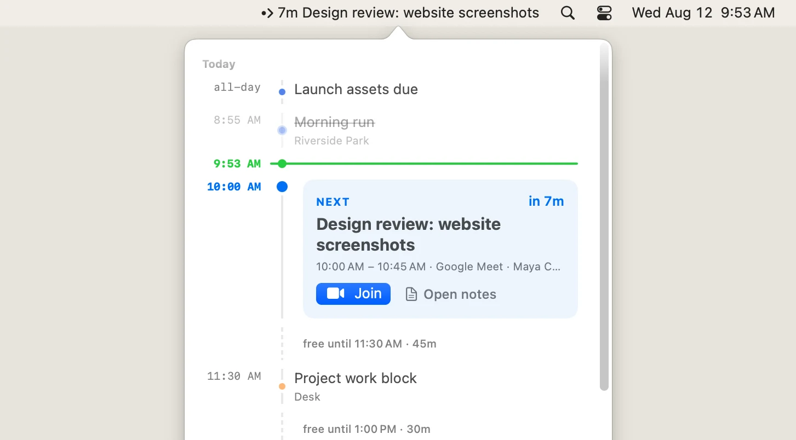
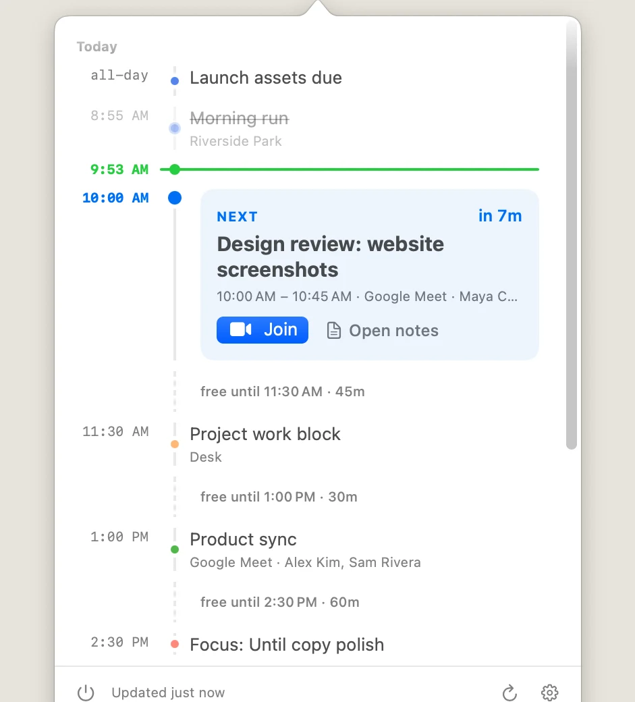
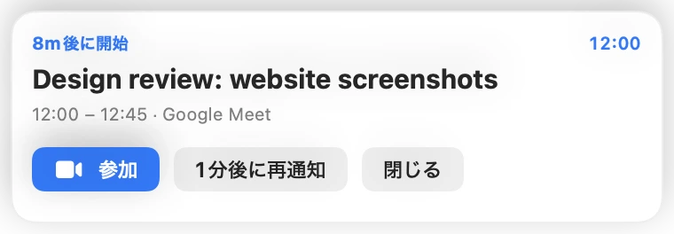
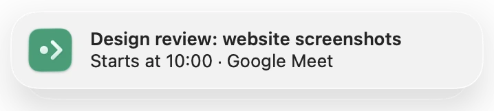
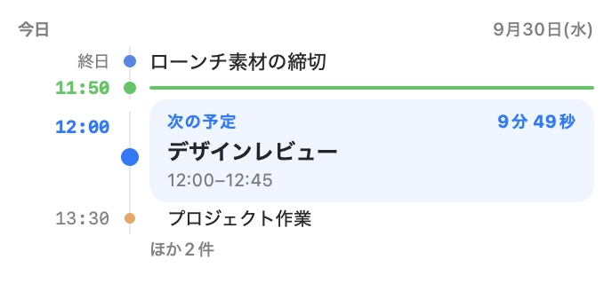

このMacのカレンダー
カレンダーAppに入っている予定を、Mac の中で読み取ります。
- iCloud・Google・Outlook / Exchange・CalDAV
- 会社でサードパーティ製アプリが禁止されていても使える
- 予定が Mac の外に出ない
macOS のメニューバーに次の会議までのカウントダウン。クリックすれば一日がひとつのタイムラインに。議事録はワンクリックで。
brew install --cask combinatrix-ai/tap/until
Timeline
メニューバーをクリックすると一日が開きます。会議の一覧ではなく、空き時間まで形になって見える一本のタイムライン。

下部には今日の予定の件数・予定の合計時間・残りの最長の空き時間を表示します。
Meeting notes
Google カレンダーの予定でワンクリックすると:
次の予定のカードには、招待に含まれる資料・デザイン・PR へのリンクも表示します。
Calendars
カレンダーApp、Google アカウント、その両方。2か所に出てくる同じ予定は1つにまとめます。
カレンダーAppに入っている予定を、Mac の中で読み取ります。
直接サインインすると、Google ならではの機能が使えます。
Alerts
会議の前にはネイティブの通知。さらに希望すれば、開始時に画面へ出し続けるアラートも。浮動カードか、すべてのディスプレイへの全画面表示を選べます。


Widgets
中・大サイズのウィジェットで今日の予定を一覧。次の会議はカウントダウン付きで強調表示します。

Focus
辞退した招待、重要度の低いカレンダー、終日の仮押さえを細かいフィルターで除外。残るのは、注意を向けるべき予定だけです。
フィルター編集画面のルール例: 自分の回答が「辞退」でない、カレンダーが選択した2つのいずれでもない、終日でない。
Details
Google Meet・Zoom・Teams・Webex・Slack ハドル・Discord・Jitsi・FaceTime・Whereby など。Zoom と Teams はアプリで開けます。
どこからでもタイムラインを開いたり、会議に参加したり。
カレンダーを選ぶ前に、サンプルの一日でタイムラインを確認できます。
すべての画面が両方の言語に対応。
Compare
| Until | MeetingBar | Dato | Dot | |
|---|---|---|---|---|
| 価格 | 無料・オープンソース | 無料・オープンソース | $18 | $14.99 |
| カレンダー | カレンダーApp + Google サインイン | カレンダーApp + Google | カレンダーApp | カレンダーApp |
| メニューバーのカウントダウン | ✓ | ✓ | ✓ | ✓ |
| ワンクリック参加 | ✓ | ✓ | ✓ | ✓ |
| 全画面アラート | ✓ | ✓ | ✓ | ✓ |
| 一日の表示 | 空き時間つきの一本のタイムライン | 予定の一覧 | 月表示＋一覧 | 月表示＋一覧 |
| 議事録ドキュメント（作成・共有・添付） | ✓ | — | — | — |
| ルールによるフィルター | ✓ | トグル | — | — |
2026年9月時点、各アプリの公式サイトの記載によります。どれも良いアプリです。Until は、一日の形と議事録をワンクリックの距離に置きたい人のためのアプリです。
FAQ
はい。MIT ライセンスのオープンソースで、アカウント登録もサブスクリプションもありません。
いいえ。Until のサーバーはありません。Mac のカレンダーは Mac の中で読み取り、Google のデータは Google から直接 Mac に届きます。サインイン情報は macOS のキーチェーンに保存します。プライバシーポリシー
いいえ。「このMacのカレンダー」で iCloud・Google・Outlook/Exchange・CalDAV の予定をサインインなしで表示できます。Google へのサインインは議事録の作成と Meet リンクの追加に使うときだけです。
はい。アカウントをカレンダーApp（システム設定 → インターネットアカウント）に追加し、「このMacのカレンダー」をオンにしてください。
macOS 13 Ventura 以降の Apple シリコン搭載 Mac と Intel Mac です。アップデートは自動でインストールされます。
Until はすべて Mac の中で動き、サーバーもアカウント登録もありません。カレンダーAppの予定は Mac の中で読み取り、Google のデータは Google から直接 Mac に届きます。サインイン情報は macOS のキーチェーンに保存し、Drive へのアクセスは Until が作成したファイルだけ（drive.file スコープ）に限っています。プライバシーポリシー（英語）→